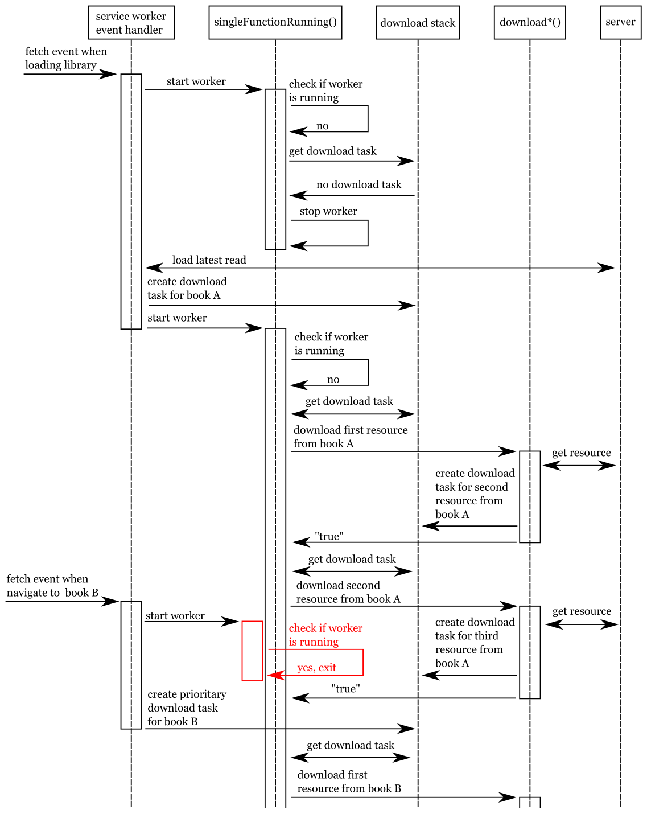

home / 2021.07.03 12:30 / javascript / service worker / synchronization
This article will be focused on a very specific use case, mainly looking for a way to throttle requests made by the UI to the server. Now that the Chronic Reader web application has an offline mode, we need to download the data necessary to display books and comics onto the client. We need to check as often as possible if new books need to be downloaded to the device, in order to ensure the necessary data is on the device and the device can go offline anytime. This mechanism for downloading everything in latest read as soon as possible will result in bursts of download activity, but in order to reduce the network bandwidth and the load on the server, we need to control these bursts. This means that, instead of asking to download six books at the same time when the user logs into the app, we want to download those books in order, one at a time, and each resource necessary to display a book (a comic book page, or a book section) needs to be downloaded one at a time as well, in sequence.
All the logic handling the download of books will be in the service worker of our website. The high-level design of our solution will use a stack, which will have multiple producers and a single consumer. The producers will be methods/actions that will add download requests to the stack, and the consumer will be a method that will be responsible with the actual download process. We are using a stack instead of a queue because we always use prioritary download tasks and these would always be added to the front of the queue, but a stack is a perfect data structure for exactly that "push to top" behavior we need. The tricky part is to make sure that we only have a single consumer, and for that we will need some form of synchronization.
First we will set up the stack and the operations on this stack, some simpler work to get us started.
var downloadStack = []
function pushToDownloadStack(o) {
let existingIndex = downloadStack.findIndex(u => {
return u.id == o.id && u.kind == o.kind && u.position == o.position && u.size == o.size && u.url == o.url
})
if (existingIndex >= 0) {
downloadStack.splice(existingIndex, 1)
}
downloadStack.unshift(o)
}
A stack task object will have the following fields:
id - the ID of the book or comic bookkind - the kind of resource, either book or comicposition - the position in that resource that we must downloadsize - the total size of the resource, so we know when we are done with the downloadurl - this field is necessary for book resources that don't have a position, like images in the bookprioritary - we can have this field set to true when we have urgent download tasks that must be prioritizedWhen we push an object of this kind to the download stack, we always check if it does not already exist there. If the task is in the stack, we remove it and add it again to the top of the stack, we prioritize it.
function popFromDownloadStack() {
let prioIndex = downloadStack.findIndex(e => e.prioritary)
if (prioIndex >= 0) {
let result = downloadStack[prioIndex]
downloadStack.splice(prioIndex, 1)
return result
} else {
return downloadStack.shift()
}
}
When we grab the next download task from the stack, we alway look for the first prioritary task in the stack. If there is no prioritary task, we just return the task at the top of the stack.
Producers are the parts in our code that call the pushToDownloadStack function. They publish download tasks/requests.
We have several in our code.
First, we can store download a book when the user requests it by clicking on it in the UI.
self.addEventListener('message', event => {
if (event.data.type === 'storeBook') {
var id = parseInt(event.data.bookId)
var size = parseInt(event.data.maxPositions)
triggerStoreBook(id, event.data.kind, size)
} else if (event.data.type === 'deleteBook') {
deleteBookFromDatabase(event.data.bookId)
} else if (event.data.type === 'reset') {
resetApplication()
}
})
async function triggerStoreBook(id, kind, size) {
let storedBook = await databaseLoad(BOOKS_TABLE, id)
if (! storedBook) {
pushToDownloadStack({
'kind': kind,
'id': id,
'size': size,
'prioritary': true
})
}
}
If the service worker receives a message of type storeBook, it will add the download request for that book only if the
book is not in the database alread. This is a generic download task that contains the book kind, id and size. This
task is also prioritary. This is because the storeBook message is sent by the UI when the user opens that book. Even
if the service worker is already in the process of downloading other books, it must set aside the previous download
tasks and focus on getting this current book to the user as quickly as possible.
Another producer is the code that ensures all books in the latest read section are stored on the device.
async function queueNextDownload() {
// load books in latest read
let latestReadMatchFunction = (response) => {
return response.url.includes(self.registration.scope + "latestRead")
}
let databaseResponse = await databaseFindFirst(latestReadMatchFunction, REQUESTS_TABLE)
if (databaseResponse) {
let responseText = await databaseResponse.response.text()
let responseJson = JSON.parse(responseText)
// load books table
let completelyDownloadedBooks = await databaseLoadDistinct(BOOKS_TABLE, "id")
// find first book id that is not in books table
for (var i = 0; i < responseJson.length; i++) {
let book = responseJson[i]
if (! completelyDownloadedBooks.has(book.id)) {
await triggerStoreBook(book.id, book.type, parseInt(book.pages))
return
}
}
}
}
This method will check if the server response containing the latest read books is already stored in the database. If we
have the latest read books, we look for the first book in the list of latest read that is not on the device and create
a download task for it through the triggerStoreBook function.
The queueNextDownload function is called in two situations:
The last kind of producer of download tasks are the functions that handle book and comic book downloads. When downloading a comic book, we download it one page at a time, until the last page has been downloaded. This page download process is handled completely through the download stack.
async function downloadComic(o) {
if (! o.kind === 'comic') return
let url = self.registration.scope + 'comic?id=' + o.id
let entity = await databaseLoad(REQUESTS_TABLE, url)
if (! entity) {
let response = await fetch(url)
let savedResponse = await saveActualResponseToDatabase(response)
}
pushToDownloadStack({
'kind': 'imageData',
'id': o.id,
'size': o.size,
'position': 0
})
}
When we start downloading a comic, we must first store the comic book UI page, containing the controls for navigating
the comic. Once this is done in the downloadComic function, we generate a download task for the first page of the
comic book, of kind imageData.
async function downloadImageData(o) {
if (! o.kind === 'imageData') return
let url = self.registration.scope + 'imageData?id=' + o.id + '&page=' + o.position
let entity = await databaseLoad(REQUESTS_TABLE, url)
if (! entity) {
let response = await fetch(url)
let savedResponse = await saveActualResponseToDatabase(response)
}
let nextPosition = o.position + 1
if (nextPosition < o.size) {
pushToDownloadStack({
'kind': 'imageData',
'id': o.id,
'size': o.size,
'position': nextPosition
})
} else {
let savedBook = await databaseSave(BOOKS_TABLE, {'id': o.id})
await queueNextDownload()
}
}
The downloadImageData function is responsible with the actual download process for a comic book page, and it is
triggerred by the download stack consumer. We always check to see if we don't already have the page in our local
database, added there by a previous intrerupted download process. Once we have downloaded and saved the comic book page,
we check if there are any more pages left in this comic. If there are, we add a download task for the next page to the
top of the download stack. If we have reached the end of the comic book, we mark it as downloaded in our database and
trigger the download of the next book in latest read through the queueNextDownload function.
Downloading books is a little more complicated, because a book is composed of two kinds of parts that need to be downloaded, book sections and book resources. But the principle behind that download process is the same, we download one part at a time, at the end we trigger the download for the next part by creating a download task for it and pushing it to the download stack, repeat until we have downloaded the full book.
The most complex part of this process is the consumer which must, somehow, be synchronized in such a manner that only one consumer function/code part is running at a time. This consumer will then take download tasks from the stack and handle them one at a time, ensuring that a single download stream exists between client and server. This throttling guarantees that every resource we need from the server will be downloaded once and stored in the database, and does not flood the server with download requests.
async function singleFunctionRunning() {
let existingWorker = await databaseFindFirst(() => true, WORKER_TABLE)
let now = new Date()
if (existingWorker) {
// check if stale
let timeDifference = Math.abs(existingWorker.date.getTime() - now.getTime())
if (timeDifference < 60 * 1000) {
return
}
}
let methodId = now.getTime()
await databaseDeleteAll(WORKER_TABLE)
await databaseSave(WORKER_TABLE, {'id': methodId})
let running = true
while (running) {
running = await downloadFromStack()
await databaseSave(WORKER_TABLE, {'id': methodId})
}
await databaseDeleteAll(WORKER_TABLE)
}
Our consumer, or worker, is the function called singleFunctionRunning. When this function is called, the first thing
we do is check if there isn't another worker already running. We check this in the database, in the workers table,
where the running worker stores its ID and the latest time it ran successfully. If there is already a running worker,
and that worker is not stale, meaning that is has made progress in the last minute, the singleFunctionRunning will
just exit without starting a new worker.
If the inital check for a running worker is passed, the singleFunctionRunning will start a new worker. The worker will
use the current timestamp as its ID. It will register itself in the workers table in the database. And then it will
start working, calling the downloadFromStack method, which handles a single download task at a time, and returns
false if no more download work is available, which will stop the worker. After every downloadFromStack method call,
the worker will update its status in the database, to signal it is still running and it isn't blocked, killed or stale.
When the worker finished running, it will remove itself from the database.
async function downloadFromStack() {
let o = popFromDownloadStack()
if (o) {
try {
if (o.kind === 'book') await downloadBook(o)
else if (o.kind === 'bookResource') await downloadBookResource(o)
else if (o.kind === 'bookSection') await downloadBookSection(o)
else if (o.kind === 'comic') await downloadComic(o)
else if (o.kind === 'imageData') await downloadImageData(o)
} catch (error) {
if (o.kind === 'book' || o.kind === 'bookSection' || o.kind === 'comic' || o.kind === 'imageData') {
pushToDownloadStack(o)
return false
} else {
// just ignore issue and continue
return true
}
}
}
return o
}
The downloadFromStack method also has some complex logic to handle failures and synchronize well with the worker. It
will first grab a download task from the stack and execute the download, going to a different function based on the
download task kind, but it will wait for that function to finish running. If any issue is encountered during the
download, the download task that failed is pushed back into the stack, but the downloadFromStack function will return
a false, which will kill the worker. This is done in order to stop the download process when the connection to the
server may not be available. The download process will be retried the next time the singleFunctionRunning function is
triggerred, and the connection to the server may have been fixed by then. For the bookResource download task, we
completely ignore failures and don't try to download again, because e-books may have resources outside the server, on
the internet, resources like publisher logos, which may no longer be available.
The last step is to decide when to attempt to start the worker by calling the singleFunctionRunning. We do this in two
places:
fetch event detected by the service worker, meaning any time the user performs some action in the UI which
results in communication with the serverhandleLatestReadRequest function, to start the
process of downloading every book in the latest read list on the client device and make sure this device is always
synchronizedTo give a better view on how the synchronization work described in this article works I have created a simplified sequence diagram that presents a few common operations happening in the application.

The simplified sequence diagram above presents the interaction of the singleFunctionRunning consumer with the other
functionalities in the service worker, and the server. The diagram shows what happens when a second
singleFunctionRunning function is called, while a previously invoked one is still active, and how this is handled
in a way that still achieves the desired results, prioritizing the download of the book the user is most interested
in at this moment.
This implementation is not perfect, there are very specific cases in which we can still have the same resources
downloaded multiple times. If the singleFunctionRunning is called multiple times from different threads at the
exact right moment, we may end up with multiple instances doing the same work. On a single web page, this would not
be an issue, but with a web application that has a service worker, that same service worker will service multiple
pages of your app. The user could start multiple tabs of the app, all tabs interacting with the same single service
worker. The strategy presented here is designed to both throttle the downloads from the server and minimize issues with
downloading the same book resource multiple times. But if a new tab is opened in the exact right moment, and a second
singleFunctionRunning is invoked precisely after the first singleFunctionRunning passed database verification but
before it registered itself in the database, and if the database verfication of the second singleFunctionRunning
passes as well, we may end up with two singleFunctionRunning instances. Without any form of synchronization mechanisms
in Javascript, this approach is the best we can do. Of course, this could never happen if the browser is using a single
thread to run your service worker, but I was not able to find a clear answer to this question yet.
In practice, the solution presented here has proved successful, for now. The Chronic Reader application is running well with this implementation, and resource download to devices, both mobile and desktop, is running smoothly and efficiently.